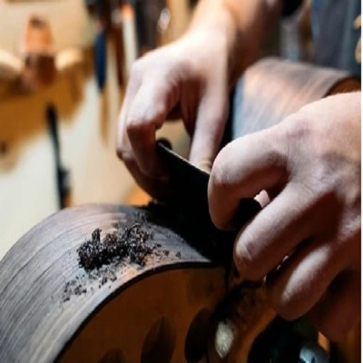
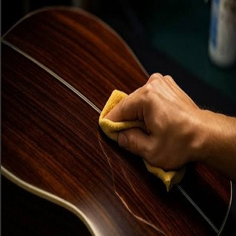

Acerca de Mikonos Luthier
Mikonos Luthier nacio de la pasion por los instrumentos de cuerdas y el oficio artesanal. Con mas de 15 anos de experiencia, nos especializamos en la construccion de guitarras, charangos, ronrocos y cuatros, tanto acusticos como electricos. Cada instrumento es una obra unica, construida con maderas seleccionadas y tecnicas transmitidas de generacion en generacion, combinadas con innovacion moderna.
Nuestro Equipo
El Luthier
Fundador y maestro luthier. Con mas de 15 anos de experiencia en la construccion artesanal de cordofonos, lidera cada proyecto desde el diseño hasta la entrega final del instrumento.
Taller de Maderas

Responsable de la seleccion y preparacion de maderas. Cada tabla es elegida por su resonancia, veta y estabilidad para garantizar la mejor calidad sonora en cada instrumento.
Acabados y Detalle

Especialista en acabados, barnizado y calibracion. Se encarga de que cada instrumento no solo suene bien, sino que tambien luzca con un acabado impecable y profesional.
Nuestros Valores
Artesania Pura
Cada instrumento es construido a mano y herramientas especializadas. El toque del artesano esta presente en cada detalle.
Maderas Selectas
Trabajamos unicamente con maderas de primera calidad, curadas y seleccionadas para ofrecer el mejor sonido y durabilidad.
Pedidos a Medida
Cada musico es único. Por eso ofrecemos la posibilidad de personalizar tu instrumento: tipo de madera, medida, estilo y terminacion.